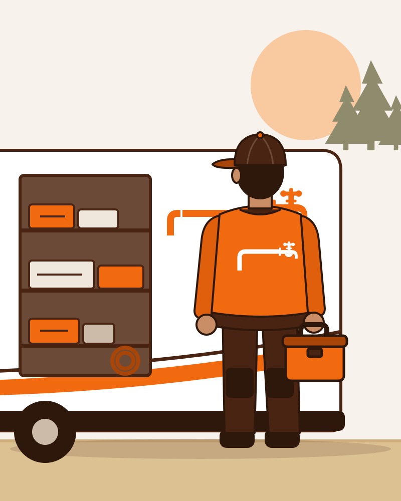

Om Eirik og Kobber og Kran
Kobber og Kran AS er et nytt rørleggerfirma på Hemnes i Aurskog-Høland. Bak firmaet står Eirik, som både eier firmaet og gjør jobbene. Ringer du Kobber og Kran, er det Eirik du snakker med, og det er han som står i døra når det er avtalt.
Bygdas egen rørlegger
Eirik startet Kobber og Kran for å være rørleggeren folk her i distriktet kan ringe. Ikke et callsenter, ikke en ny montør hver gang, men én som kjenner bygda og husene, brønnene og hyttene, og som vet hva en kald januar gjør med et rør.
Slik jobber vi
- Pris før start. Du får vite om jobben tas på timepris, prisoverslag eller fastpris før Eirik begynner.
- Kommer når det er avtalt. Eirik lover ikke tider han ikke kan holde. Blir det forsinkelser, får du beskjed.
- Ryddig. Skoovertrekk, dekking av gulv og opprydding er en del av jobben.
- Ærlig. Er det noe vi ikke gjør, som spyling, elektrisk arbeid eller brønnboring, sier vi det og hjelper deg videre.
- Dokumentert. Du får dokumentasjon på det som er gjort, til boligmappa og forsikringen.
Godkjenninger
Kobber og Kran er nystartet. Vi viser bare godkjenninger vi faktisk har, og de står på denne siden når de er på plass.
Nærmere enn du tror
Kobber og Kran holder til på Hemnes og jobber i hele Aurskog-Høland og i Lillestrøm. Se hvor vi kjører på siden om områder.

Om Eirik
Kobber og Kran er et lite rørleggerfirma på Hemnes, med Eirik som eier og rørlegger. Ringer du, er det Eirik du snakker med, og det er han som kommer. Han kjenner bygda, brønnene, hyttene og vintrene her, og vil være den du ringer neste gang også.
Du får dokumentasjon
- FDV-dokumentasjon (forvaltning, drift og vedlikehold) på det som monteres, til boligmappa og forsikringen
- Dokumentasjon på rørleggerarbeidet i våtrom, med bilder underveis av det som skjules i vegg og gulv
- Bilder før og etter jobben, hvis du ønsker det
Godkjenninger
- Våtromsgodkjenning (kommer når den er på plass)Eksempel
Dette sier kundene
Tanken begynte å lekke en fredag. Eirik forklarte hvordan vi stengte vannet, kom etter avtale og byttet den på en formiddag. Ryddig, og vi fikk papirene på mail etterpå.
EksempelVinterstengning og åpning av hytte ved Setskog, med frostsikring av vannposten ute.
Eksempel